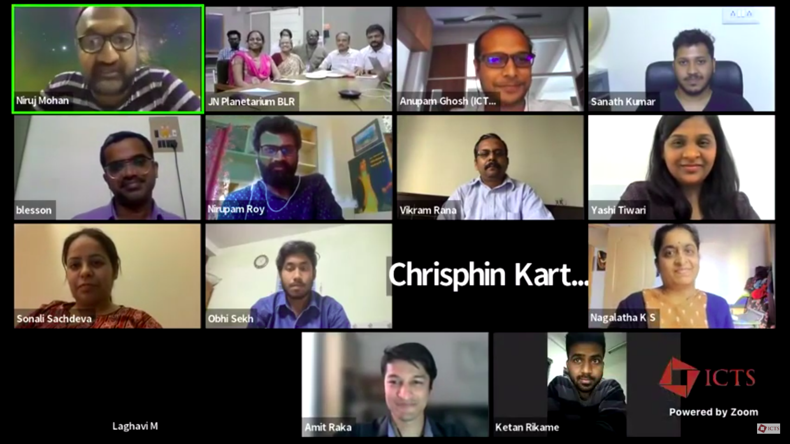

Bengaluru: The Astronomy City
As part of the National Science day celebrations, the Indian Institute of Astrophysics organised a panel discussion titled- Bengaluru The Astronomy City. The focus of the meeting was to educate the young students regarding various opportunities in astronomy and astrophysics at all educational levels.
A total of 10 institutions located in Bengaluru took part in the event namely:
- Indian Institute of Astrophysics (IIA)
- International Centre for Theoretical Sciences (ICTS)
- Raman Research Institute (RRI)
- Indian Space Research Organisation (ISRO)
- Indian Institute of Science (IISc)
- CHRIST (Deemed to by University)
- St. Joseph’s College
- Bangalore Astronomical Society (BAS)
- Association of Bangalore Amateur Astronomers (ABAA)
- JawaharLal Nehru Planetarium (JNP)
These institutes include core research institutes (1-4), Universities (5-7), amateur organizations (8-9) and a planetarium (10) involved in astronomy research and outreach. The panel consisted of a diverse group of individuals which included Ph.D. students, postdoctoral fellows, senior faculty members as well as amateur astronomers. The representatives introduced themselves, about their career paths and how they reached their current positions. Niruj Mohan Ramanujam from IIA started the event with an introduction to the panel.

The participants of the discussion panel. Image courtesy: author.
After the introductions were over, Sonali Sachdeva from RRI gave a presentation covering opportunities for students as well as interested minds at almost all educational levels. The initial slides focussed on the opportunities in astronomy for school students. For instance, the following opportunities were presented for school students:
- Public talks especially for school students which are regularly organized by all participant organisations
- Schools can invite a scientist to interact with the students (ICTS)
- Science workshops for students and teachers (JNP)
- Science Education in Early Development (SEED) Summer Program for students (JNP)
- Science Over Weekends (SOW) for high school students (JNP)
- Maths Circle (ICTS)
- Outreach programs for govt schools in North Bengaluru (ICTS)
- Young Scientist Program (ISRO)
After the opportunities available to school students, the subsequent slides presented opportunities for students at the college level. The opportunities at the BSc and MSc levels were presented in detail. All the participating institutes provided information regarding short or long term research projects under the guidance of their faculty members. The complete information is available in the video.
The next part of the discussion focused on the opportunities for prospective Ph.D. students.
Bengaluru probably has the highest number of astronomy Ph.D. students in the country.
All the participant research institutes and universities offer Ph.D. programs for students from both science and engineering backgrounds. Students are admitted through national eligibility tests such as GATE/JEST/NET and/or through their own entrance exams, followed by an interview. These researchers can also carry out their research in collaboration with multiple universities/institutes.
Information about the opportunities for amateur astronomers was provided by representatives from ABAA and BAS, organizations which have been educating Bengalurians about astronomy and astronomical events for a long time. JNP offers a variety of programs and workshops for people from all backgrounds and expertise. These programs have been attracting thousands of students every year for more than three decades. So far, over 135 students who have benefitted from these programs have taken up astronomy research as their career.
The presentation was followed by a discussion session which was quite lively and people asked a wide variety of questions such as the opportunities for primary school children, visits of students to the research laboratories, teacher training opportunities, and support for astronomy clubs in schools. For a lot of questions, the panelists provided their perspectives which provided comprehensive answers to these questions.
Further, information regarding new opportunities was provided by the institutions such as ISRO which has launched the ‘Young Scientist Program’. Representatives from IIA provided detailed information about Engineering or astronomy-based projects for the upcoming 30m telescope. Students were provided detailed information about how to apply for research projects at these research institutes. Information about summer programs and internships for MSc/engineering students in all the institutes were also discussed. The links provided at the end of the article provide comprehensive information about these opportunities.
From the vibrant discussion, it is evident that Bengalurians are a curious lot when it comes to research happening in Astronomy. It was noticeably observed that parents are particularly interested in exposing their kids to astronomy and science in general from a very young age. The panelists were also excited to share more of their work. This discussion indeed seems like the first step towards the combined efforts of all these institutions coming together to take astronomy to the Bengaluru people. We hope for many more such efforts to follow in the future.
The video of the meeting is available below:
The links to various internship opportunities for students at various education levels:
- IIA internship opportunities
- RRI internship opportunities
- IISc open positions
- ICTS internship opportunities
- ISRO internship opportunities
- ISRO YUVIKA - YUva VIgyani KAryakram (Young Scientist Programme)
- KVPY scheme
- IAS fellowship
For more information regarding the career opportunities, please also visit the career help section in our website.
Related articles
- A list of scholarships for women in Science
- Voices of the Women in Science - A list of books on women scientists
- Measuring the age of the Universe: An overview